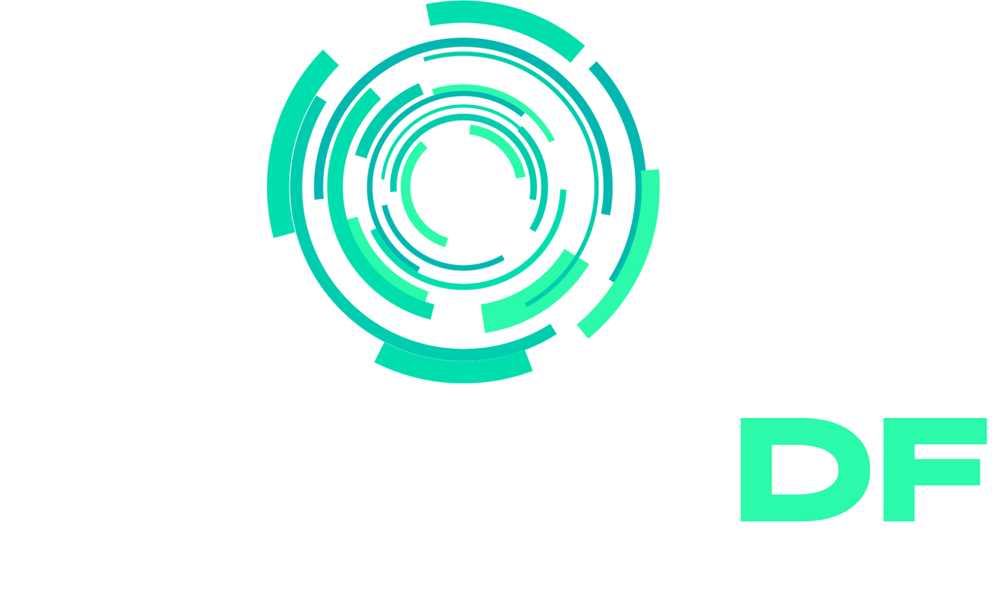

Mapa de oportunidades, empresas e serviços locais.
marketing estratégico + tecnologia + audiovisual
Não é só aparecer. É parecer inevitável.
Marketing estratégico para empresas, lideranças públicas, figuras políticas e projetos que precisam transformar comunicação em presença, autoridade e oportunidade real.
trabalhos desenvolvidos pela primusdf
Estratégia, conteúdo e tecnologia para resolver dores reais.
A Primus DF cria campanhas, posicionamento, gravações, social media, sites, sistemas e experiências digitais. O NEXO entra como laboratório de soluções próprias: uma parte do ecossistema, sem limitar tudo o que a Primus entrega para marcas, eventos e projetos.
apps e sites criados
Ferramentas digitais em um só bloco.
Uma vitrine compacta dos apps, sites e protótipos criados pela PrimusDF. Cada item tem acesso direto e um botão para compartilhar com uma mensagem pronta.
Busca de disponibilidade de usuário em múltiplas plataformas.
Hub com experiências, ferramentas e protótipos NEXO.
Organização financeira em formato direto e acessível.
Credenciamento e presença para eventos e ativações.
Rede social NEXO com comunidades, avatar, emblemas e interações.
Mapa de colecionadores, controle de figurinhas, faltantes e repetidas para testar trocas da Copa.
Conferidor simples para jogos da Mega-Sena, com resultado atualizado, ranking de acertos e compartilhamento.
01
Marketing Estratégico
Diagnóstico, posicionamento, campanhas e presença digital orientada por objetivo.
02
Tecnologia Aplicada
Sites, sistemas, apps sem instalação, automações e jornadas gamificadas.
03
Audiovisual
Cobertura de eventos, drone, vídeos com IA e conteúdo para marcas serem lembradas.
método primus
Ideia boa precisa virar circulação.
A Primus olha para marca, público, canal e tecnologia como partes do mesmo sistema. O resultado é presença com estética, estratégia e execução.
Entendemos objetivo, público, reputação e oportunidade.
Transformamos diagnóstico em campanha, design, mídia e tecnologia.
Publicamos, filmamos, impulsionamos, desenvolvemos e acompanhamos.
Medimos sinais, ajustamos criativos e ampliamos o que gera atenção.
para quem quer entender melhor
Não somos só uma agência de post.
Audiovisual, Drone e IA
Cobertura de eventos, vídeos institucionais, captação com drone e produção com inteligência artificial.
Sites, Apps e Gamificação
Experiências digitais, sistemas, aplicativos sem instalação e jornadas interativas para marcas e eventos.
Branding e Design Estratégico
Identidade visual, peças 2D/3D, campanhas e linguagem visual com intenção.
Tráfego e Redes Sociais
Gestão de mídia, conteúdo, campanhas e presença digital orientada por objetivo.
Projetos e Licitações
Consultoria para estruturar propostas, comunicação e apresentação de projetos.

imagem com intenção
Marketing Estratégico para marcas em movimento.
A Primus transforma estratégia em estética: conteúdo, campanha, audiovisual, apps e presença pública com assinatura.
